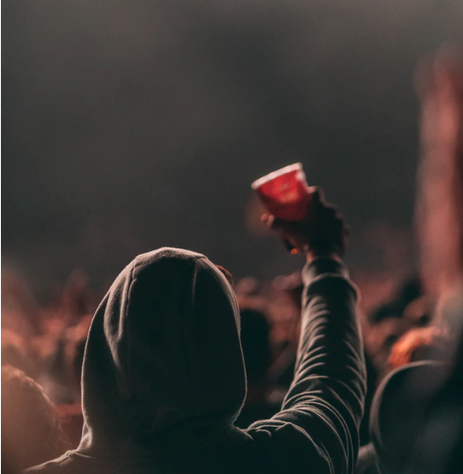
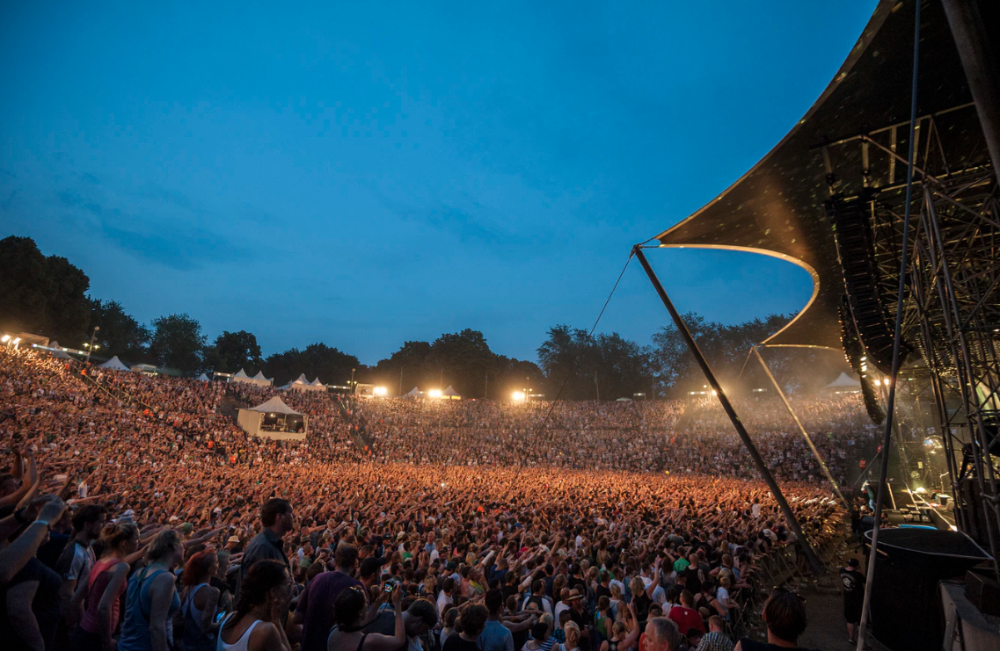
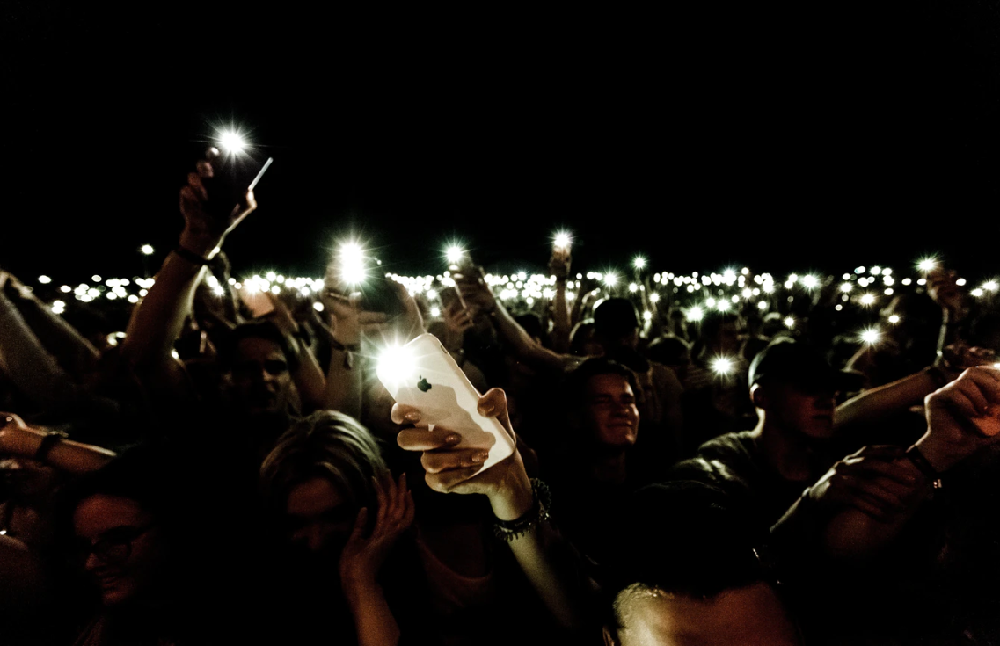
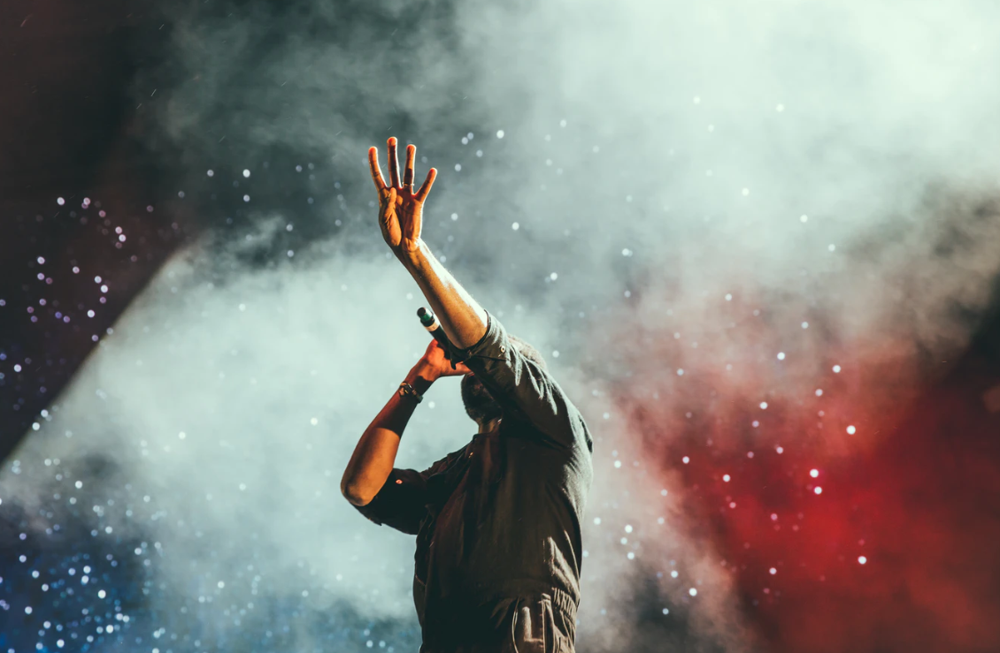

Our vision
In March 2020, 25,000 People of Tomorrow from all over the world will gather again for an adventure of a lifetime filled with ski, music and party in the beautiful surroundings of the French Mountains of Alpe d’Huez.Enjoy a great winter holiday on an altitude of more than 2000 meters and party at beautiful stages in the village and on the mountains with the world best DJ’s. - https://www.tomorrowland.com/en/winter/welcome

Burning Man Project’s Board of Directors is gaining four exciting new members and saying a heartfelt “thank you” to another member who has moved on. Our board represents a wide array of talent, expertise and diverse perspectives, as well as a deep passion for the mission and vision of Burning Man Project. - https://burningman.org

Les concerts du festival Solidays se déroulent sur cinq scènes de dimensions différentes. Les scènes principales « Paris » et « Bagatelle » accueillent les têtes d’affiche. Quant aux plus petites scènes couvertes sous chapiteau « Dôme », « Domino » et le « César Circus », elles sont réservées aux sensations du moment et autres étoiles montantes4. Depuis 2018, la « Boom Box » a fait son apparition5. Véritable dancefloor à ciel ouvert, des collectifs de DJs s’y produisent comme « Silent disco »6, un concept de boom silencieuse venu des Pays Bas. - https://fr.wikipedia.org/wiki/Solidays

Le festival des Vieilles Charrues est un festival 100% associatif de musiques actuelles, annuel, programmé sur quatre jours le troisième weekend de juillet dans la commune de Carhaix-Plouguer, dans le Finistère. Le festival est souvent surnommé «les Charrues », notamment sur les réseaux sociaux. Créé en 1992 dans la commune voisine de Landeleau, le festival propose une programmation éclectique depuis sa création. Malgré la situation géographique du festival dans une région relativement enclavée1, son succès s'explique notamment par le fait que les Vieilles Charrues ont su au fil du temps capter la quasi intégralité des artistes en tournée en Europe en juillet, dans une exhaustivité de styles englobant pop, rock, électro, hip-hop, chanson, world, folklore local... - https://fr.wikipedia.org/wiki/Festival_des_Vieilles_Charrues